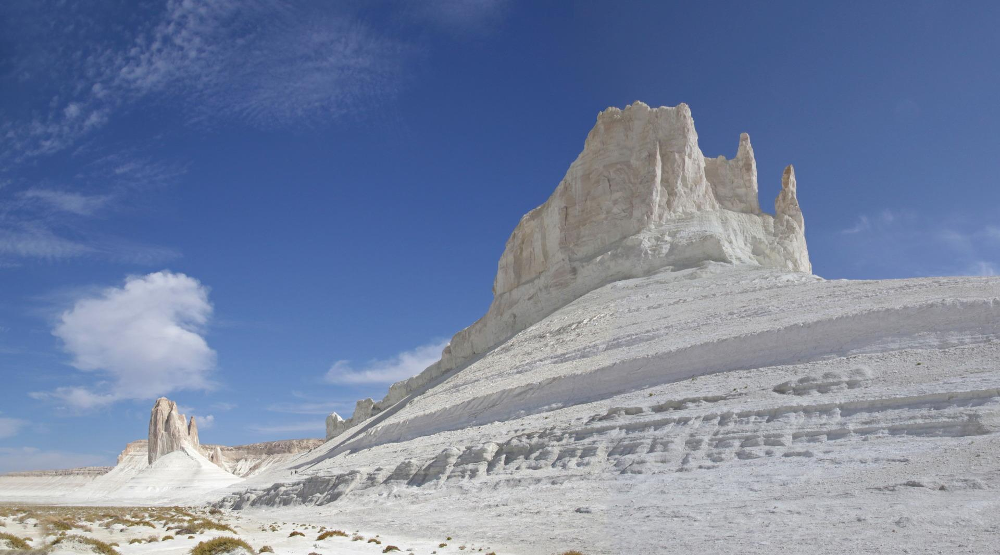

Поющая гора
Аккум-Калкан («Поющая гора») — песчаный бархан, находящийся на территории парка Алтын-Эмель в 180 км от Алматы,
между гребнями Джунгарского Алатау. Внимание туристов и ученых привлекает не сам бархан, а его способность «петь»:
создаваемый гул может менять тональность и силу звука в зависимости от погоды. При сильном ветре «песня» горы превращается в вой,
крик, который слышен на несколько километров.
Более пологая, южная, сторона бархана напоминает хвост.
По легенде, это превратившийся в песчаную насыпь шайтан, черт, который был наказан Всевышним за грехи.
Теперь шайтан спит, а снятся ему только плохие сны. Вот он и стонет, поет или воет.

Интересен тот факт, что бархан, вопреки природе, не кочует, а находится на одном месте.
Образовавшись в результате выдувания породы с отмели реки Или несколько тысячелетий назад, гора не единожды становилась укрытием и пристанищем для путешественников.
Многие уверены, что это не бархан, а курган, в котором покоится батыр или хан.
Мертвое озеро
Это озеро, расположенное в Талдыкурганской области, известно своими необычными свойствами сохранять температуру:
даже в самое жаркое лето, в самый изводящий зной его вода ледяная.
Несмотря на красоту водоема, в озере нет живности, не растут водоросли, не наблюдается ни одного вида водных насекомых.
Считается, что все живое в нем убивает токсичный газ, выделяемый из расщелины на дне.
Водолазы, опускающиеся в воды Мертвого озера, рассказывают, что находиться в нем невозможно более 5-ти минут, даже с полным воздуха баллоном.
Печальна и статистика озера по количеству утопленников: ежегодно в водоеме по непонятным причинам тонет несколько человек — из отдыхающих, не верящих в «народные сказки».
Местные жители обходят озеро стороной, веря, что оно проклятое.
По легенде, столетие назад в нем утопил свою невесту накануне свадьбы жених, ослепленный ревностью.
Озеро Кол-Коль
Загадочные места Казахстана разнообразны и удивительны. У озера Кол-Коль, расположенного в Жамбылской области на юге Казахстана, странные физические свойства:
вода в нем постоянно свежая и «живая», хотя в озеро не впадает ни одна река, ни один источник.
Гидрологи подумывают о системе подземных пещер, но досконально исследовать озеро пока не удалось: на некоторых участках оно бездонное.
Иногда на воде возникают большие воронки, втягивающие различные плавающие предметы.
Часто из гладкой поверхность озера мгновенно превращается в мелкую рябь.
По сказанию, в озере Кол-Коль обитает водяной дух — Айдахаре. Современные исследователи аномалий поговаривают, что в водоеме живет доисторическое существо,
дивным образом сохранившееся до наших дней, — сородич Лохнесского чудовища. Иначе как объяснить рассказы рыбаков и пастухов, уверяющих в том, что часто видели,
как в озеро «затягивало» водоплавающих птиц и животных, пьющих у берега воду?
Долина шаров
Долина шаров находится в урочище Торыш Мангистауской области.
Вся долина буквально засыпана каменными шарами различных размеров и оттенков, происхождение которых до сих пор неизвестно.
Уже более 250 лет ученые ломают голову над этой загадкой, но прийти к определенным выводам пока не могут.
По одной из версий, шары возникли в глубокой древности в теплых водоемах, когда существовали благоприятные условия для размножения планктона.
Заиленные скопления мелких организмов становились сердцевиной этих шаров, которые разрастались по принципу снежного кома. Когда воды отступали,
причудливые круглые глыбы оказывались на суше. Центрами такого стяжения могут быть зерна минералов, раковины, зубы и кости рыб, остатки растений.
Аральское море
Когда-то это море было в числе самых огромных водоемов на планете. Сейчас Аральское море практически доживает свои последние годы.
В 1989 году оно распалось на два независимых водоема: Северное (малое) и Южное (большое) Аральское море. В свою очередь Южное Аральское море разделилось еще на две части:
восточную и западную. А в 2014 году восточная часть Южного моря высохла полностью. Между тем, этот удивительный водоем хранит немало тайн и загадок.
В 1990 году сотрудники Казахского научно-исследовательского института, производя съемку прибрежных зон Арала,
сняли на глубине 15 метров десятки крупных геометрических рисунков, похожих на знаменитые изображения в пустыне Наска.
Удивительно правильные геометрические фигуры были выполнены в одном направлении и охватывали примерно 500 квадратных метров, а ширина рисунков колебалась от 2 до 50 метров.
В Аральском море насчитывается около 60 исторических и архитектурных памятников. По словам исследователей, морская вода здесь мелела и пополнялась не раз и раньше, в древние времена.
Найденные в начале XXI века на дне моря останки мавзолея Кердери, датируемого XI—XIV веками и городище Арал-асар, который относится с золотоордынскому периоду,
свидетельствуют о царствовавшей когда-то здесь средневековой культуре и цивилизации. На морском дне также были обнаружены следы караванных дорог, камни, кирпичный цех,
свечи и монеты, крупные мельничные и зернохранилища. В целом, здесь есть останки древних поселений и культовых сооружений от XI до XVI веков.
Другие памятники архитектуры обнаруживают себя постепенно, по мере обмеления Арала. Поэтому самые крупные находки, как считают археологи, впереди.
Эти места называют Аральской атлантидой.
Озеро Каинды
Озеро Каинды – это красивый и удивительный природный феномен. Водоем образовался после землетрясения, затопив местный лес.
Благодаря этому турист может наблюдать необыкновенную картинку: стволы елей, поднимающиеся к небу прямо из голубовато-бирюзовой воды.
В Каинды водится дикая форель, а неподалеку расположена еще одна достопримечательность – березовая роща (перевод названия озера – «изобилующее березами»).
Из-за подводных лесных пейзажей водоем находится в списке самых привлекательных мест для дайверов.
Озеро Каинды известно своей удивительной способностью менять свой цвет в зависимости от времени года и окружающей природной среды.
В летний период, когда солнечный свет наиболее интенсивен, вода озера приобретает ярко-голубой оттенок, создавая захватывающий контраст с зелеными холмами вокруг.
Это явление происходит из-за высокой концентрации каротиноидов в воде, которые взаимодействуют с солнечным светом и придают озеру этот уникальный оттенок.
Зимой, когда озеро покрывается льдом, его цвет становится еще более интересным.
Лед приобретает оттенки от синего до зеленого, создавая впечатляющий мозаичный эффект на поверхности озера.
Это вызвано определенными свойствами воды и ее взаимодействием с льдом, который преломляет свет и создает этот уникальный цветовой спектакль.
Таким образом, Озеро Каинды не только является живописным природным объектом,
но и предоставляет наблюдателям захватывающую возможность наблюдать за его переменчивым цветом, меняющимся вместе с природными циклами.
Шакпак-ата - подземная мечеть в Мангистауской области
Шакпак-ата - это уникальный архитектурный памятник, который находится в северо-восточной части полуострова Тюб-Караган в Мангистауской области, в урочище Шиликудук.
Мечеть вырублена в толще скального мыса, образованного руслами двух оврагов, опускающихся по склону горы Унгазы к одному из заливов Каспийского моря.
Люди приезжают сюда со всех уголков страны: кто-то в туристических целях, а кто-то - помолиться или исцелиться.
По местным легендам, давным-давно в пещере на склоне горы жил целитель Шакпак-ата. Со всех окрестных территорий к нему приходили люди за исцелением души и тела.
Прошли века, старца не стало, но люди до сих пор приезжают к пещере, чтобы сила древнего врачевателя помогла им. По другой легенде, в пещере жил великий воин.
Его назвали Шакпак-ата (Старец-кремень), так как даже в преклонном возрасте он не потерял свою могучую силу.
Плато Устюрт и урочище Бозжира
Урочище Бозжира - это боковая часть плато Устюрт, где матушка-природа дала волю своему воображению, создав неземной белый пейзаж.

Небольшая долина Бозжира окружена амфитеатром из естественных причудливых камней с трех сторон - белоснежные каньоны, скалистые замки и каменные юрты.
Если пройтись между реликтовыми горами Бозжира, то можно увидеть, как они меняют свой облик, совсем как хамелеоны.
Эти реликты, как тихие стражи, смотрят в туманные дали, охраняя покой величественного символа Мангистау - гигантской каменной юрты.
История появления Босжиры связана с океаном Тетис.
Как уверяют ученые, миллионы лет назад эти земли были скрыты под водой.
Известно, что океан занимал большую часть территории и исчез окончательно, дав начало океанам и морям, которые существуют по сей день, в том числе и Каспийскому морю.
Каньон Киин-Кериш - кусочек Марса на Земле
Кроваво-красные и оранжево-желтые каменные гривы, загадочные древние скалы - это все таинственный Киин-Кериш.
Пейзажи удивительного ландшафта каньона в сочетании с раскаленным горячим воздухом и полным отсутствием воды создают неповторимую космическую атмосферу Красной планеты.
Ландшафт каньона просто потрясающий по своему разнообразию: равнины, соляные пятна, полосы луговой растительности соседствующие с высохшими ручейками, которые исчезают летом.
Киин-Кериш называют "Замком горного духа" и слагают про него различные легенды.
Геологи считают, что Киин-Кириш - это уникальный палеонтологический памятник, он занимает площадь около 300 гектаров.
Яркая расцветка глинистых пород говорит о том, что они образовались в условиях жаркого и влажного тропического климата мезозоя, когда на Земле господствовали динозавры.
Загадочный и неизведанный Бектау-Ата
Бектау-Ата - это вулканический массив, одна из красивейших достопримечательностей северного Прибалхашья.
Необычный скальный массив появился из-за плавления горных пород в ходе зарождения вулкана, который так и не взорвался.
Природа этой местности очень отличается от казахской степи.
Посреди пустыни внезапно возникают горы, окруженные маленькими лесами и густыми кустами.
В некоторых местах образовываются небольшие озера и ручьи.
На вершинах гор также есть небольшие водоемы — это ямы, в которые набирается дождевая вода и хранится там долгое время.
В некоторых даже заводятся маленькие раки (щитни).
С названием горы Бектау-Ата связано множество легенд.
Во время войны казахов с джунгарами жил один старец, которого звали святой Бектау-ата. Однажды, спасаясь от погони, Бектау укрылся в пещере.
Преследователи не смогли его найти и окружили горы. Умирая от жажды, он взмолился Всевышнему.
Услышал тот Бектау-ата и создал для святого старца в глубине пещеры источник пресной воды.
Благодаря тому, что пещера была не у подножия горы, а на высоте, враги не нашли святого.